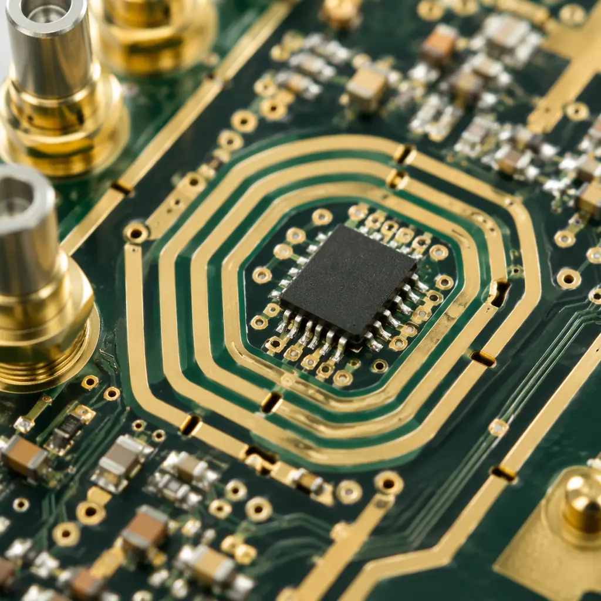
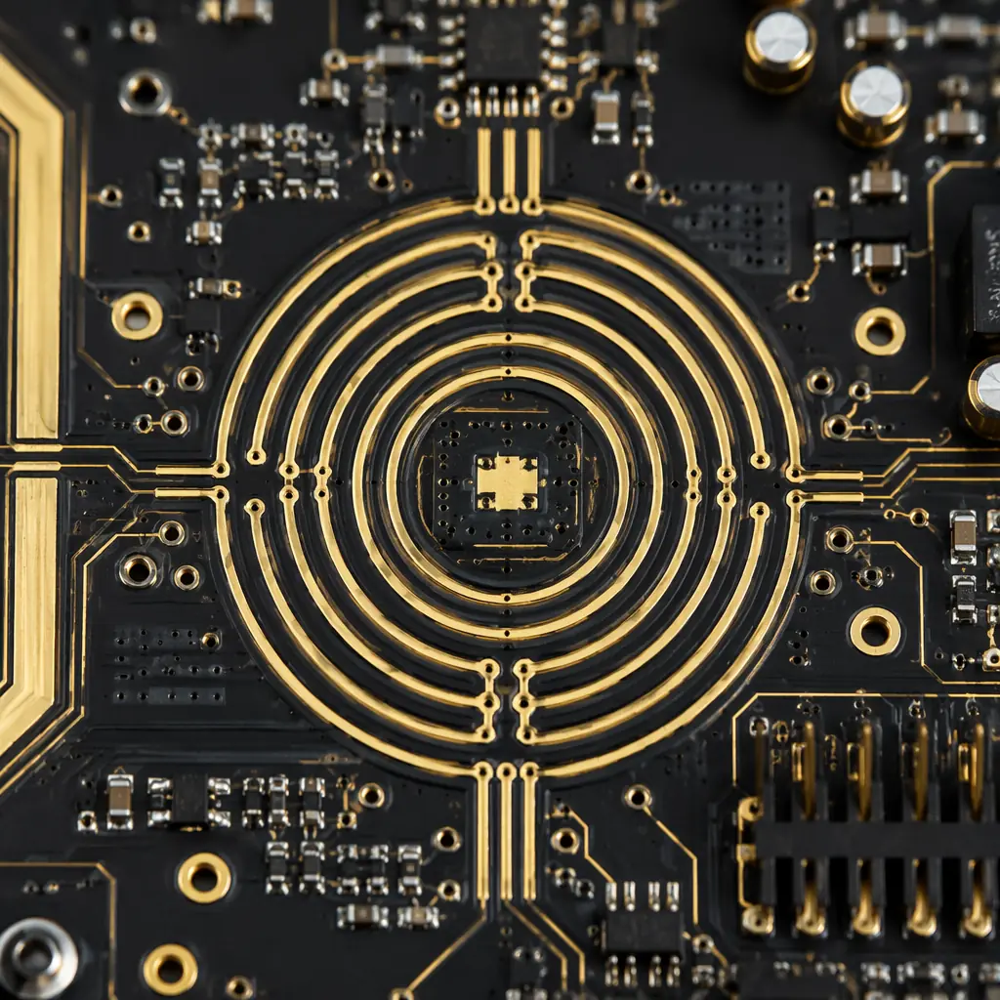

A mass spectrometer detecting contaminants at 50 parts per billion is measuring ion currents in the femtoampere range. The PCB that amplifies and digitizes that signal must contribute less noise than the phenomenon being measured — which means leakage currents below 10 fA and voltage noise below 1 µV RMS across the bandwidth of interest. This isn't a different degree of quality from commercial PCB manufacturing; it's a different category of manufacturing altogether. Standard FR-4 laminates, conventional solder mask, and ambient-environment assembly produce leakage and noise levels that would completely swamp the signal in a trace-level analytical instrument.
At Huaxing PCBA, we manufacture precision analog PCBs using IPC-A-610 Class 3 cleanroom assembly protocols with documented ionic contamination levels below 1.56 µg/cm² NaCl equivalent — the threshold where surface leakage becomes negligible for high-impedance circuits. For instrument OEMs transitioning from in-house prototyping to volume production, understanding these manufacturing requirements before releasing a design to a contract manufacturer can save months of debugging.

Material Selection: The PCB Substrate Is Part of the Signal Path
In a digital PCB, FR-4 is a mechanical platform — its electrical properties matter only for impedance control and dielectric loss. In an analog instrument PCB measuring femtoampere currents, the laminate is functionally part of the circuit. Bulk resistivity, surface resistivity, and moisture absorption directly determine the leakage current between adjacent traces, which becomes the noise floor of the entire measurement.
Bulk Resistivity: Why Standard FR-4 Fails Below 1 pA
Standard FR-4 has a bulk resistivity of approximately 10⁸ to 10⁹ MΩ-cm under typical laboratory humidity (40-60% RH). At 5V bias across a 0.2mm gap between traces, this produces leakage currents in the 50-500 pA range — three to four orders of magnitude above the signal level in a mass spectrometer electrometer. High-performance laminates like Rogers 4350B or Isola Astra MT77 offer bulk resistivity of 10¹⁰ to 10¹² MΩ-cm, reducing leakage into the sub-picoampere range. For the most sensitive circuits, PTFE-based laminates (bulk resistivity >10¹⁴ MΩ-cm) are essentially perfect insulators. See our PCB materials selection guide for a comparison of laminate electrical properties.
Moisture Absorption: The Silent Noise Source
FR-4 absorbs 0.1-0.2% moisture by weight at 50% RH, and its surface resistivity drops by an order of magnitude between 30% and 85% RH. For an analytical instrument that may operate in a non-air-conditioned laboratory in a tropical climate, this moisture sensitivity translates to baseline drift that mimics a real signal change. Polyimide and PTFE laminates absorb essentially zero moisture (0.01-0.03%), making the instrument's noise floor stable across environmental conditions. Ceramic vs PTFE vs polyimide substrates comparison covers the tradeoffs in detail.
Dielectric Absorption: When the Board Remembers Previous Voltages
Dielectric absorption (DA) — the tendency of a capacitor to retain charge after discharge — applies to PCB substrates too. When a precision analog multiplexer switches between channels on a chromatography detector, the PCB traces between the multiplexer and ADC act as small capacitors with DA. After switching, a residual voltage from the previous channel lingers for milliseconds, corrupting the new reading. Low-DA materials (PTFE: 0.02%, polyimide: 0.5%) dramatically outperform FR-4 (1.5-2.5%) on this parameter. This is a PCB-level phenomenon that circuit designers often blame on the ADC — but the root cause is in the board material.
Design Rule: For circuits handling currents below 1 nA, the PCB substrate is not electrically transparent. Specify laminate bulk resistivity >10¹⁰ MΩ-cm and water absorption <0.05% on the fabrication drawing. The cost difference between high-performance laminate and FR-4 on a 100×160mm 4-layer board is approximately $8-15 — negligible compared to the instrument's selling price and the cost of debugging noise problems after assembly.
Guarding and Leakage Control at the PCB Level
Even with an ideal laminate, leakage currents flow across the PCB surface through contamination — flux residue, finger oils, humidity, and dust. Guard rings, driven shields, and slot cuts are the PCB designer's tools for controlling these surface leakage paths. But these structures only work if the PCB manufacturer executes them correctly.

Guard Rings Must Be Complete and Continuous
A guard ring is a conductive trace driven to the same voltage as the sensitive node, surrounding it on all sides. Because there's zero voltage difference between the guard and the node, no leakage current flows — regardless of surface contamination. But if the guard ring has a break — even a 0.1mm gap where solder mask bridges between ring segments — the protection is lost. The PCB manufacturer must verify guard ring continuity on every board using electrical test, not just visual inspection. For similar precision requirements, see our mixed-signal PCB design guide on analog-digital partitioning.
Solder Mask Removal Over Critical Nodes
Solder mask is not a high-quality insulator — its surface resistivity is typically 10⁶ to 10⁸ MΩ, several orders of magnitude below even standard FR-4. Over high-impedance nodes, solder mask creates a leakage path to adjacent traces. The standard practice is to remove solder mask from sensitive analog areas (defined as a keep-out in the solder mask layer) and rely on the bare laminate surface — which, when clean, has far higher resistivity. However, this means the board must be assembled and cleaned under strictly controlled conditions, because bare laminate exposed to ambient factory air will rapidly accumulate contamination. PCB ionic contamination and cleanliness testing is mandatory after assembly for boards with exposed high-impedance nodes.
Slot Cuts for Physical Isolation of Input Sections
For the most sensitive circuits — typically the input transimpedance amplifier stage of a mass spectrometer or photomultiplier tube interface — guard rings alone may be insufficient. Milled slots in the PCB physically separate the high-impedance input node from the rest of the board, eliminating any possible surface leakage path. These slots must be specified on the fabrication drawing with minimum width (typically 1.0-1.5mm) and positioned to avoid creating mechanical weak points. This technique is also used in high-voltage PCB design for creepage extension, but in analytical instruments the goal is current isolation rather than voltage withstand.
Cleanroom Assembly and Contamination Control
The cleanest PCB design is useless if the assembly process deposits flux residue across the guard rings. Standard no-clean flux leaves 1-5 µg/cm² of residue — enough to create a measurable leakage path across a 0.5mm guard gap at 50% RH. For femtoampere-level circuits, assembly cleanliness is not an option; it's a specification.
Water-Soluble Flux With Full Aqueous Cleaning
No-clean flux chemistry is designed to leave benign residue on digital and commercial analog boards. For precision instrument PCBs, the correct approach is water-soluble flux followed by automated aqueous cleaning in deionized water (resistivity ≥18 MΩ-cm) with inline ionic contamination testing. Post-cleaning, boards must achieve ≤1.56 µg/cm² NaCl equivalent (IPC-J-STD-001 Class 3 requirement). This is the standard we apply to all analytical instrument PCB assemblies. See aqueous vs solvent PCB cleaning for process selection guidance.
Conformal Coating After Cleaning — But Not Over High-Impedance Nodes
Conformal coating protects cleaned boards from re-contamination during handling and field operation, but most coating materials have lower surface resistivity than clean laminate. The solution: apply conformal coating over the entire board except the high-impedance analog sections, which are protected by a soldered metal shield can that creates a dry nitrogen or desiccated micro-environment. This approach — coating plus selective shielding — is standard practice in mass spectrometer preamplifier assemblies. Our conformal coating guide covers material compatibility with different PCB surface finishes.
| Instrument Type | Min Detectable Signal | Required Leakage Floor | Laminate | Assembly Class |
|---|---|---|---|---|
| Mass Spectrometer (Q-TOF) | 10-50 fA ion current | <1 fA | PTFE or Rogers 4350B | Class 3 + cleanroom |
| Gas Chromatograph (FID) | 1-5 pA detector current | <100 fA | Rogers 4350B or Polyimide | Class 3 + aqueous clean |
| pH/ISE Meter | 0.1 mV / 10 fA | <50 fA | High-Tg FR-4 with guard rings | Class 3 |
| Spectrophotometer | 10-100 pA photodiode | <5 pA | High-Tg FR-4 | Class 2+ |
| Electrochemical Workstation | 1-10 pA @ 1 mV | <500 fA | Rogers or Polyimide | Class 3 + aqueous clean |
| Particle Counter (CPC) | Single particle pulse | <1 pA | High-Tg FR-4 | Class 2+ |
Testing What Cannot Be Seen: Verification Beyond Electrical Test
Standard electrical test — continuity and isolation — won't reveal whether a PCB has acceptable leakage for femtoampere-level circuits. A board can pass 100% flying probe test with flying colors and still have guard ring leakage that ruins measurement accuracy. Instrument-grade PCBs require additional verification.
SIR (Surface Insulation Resistance) Testing at Elevated Temperature/Humidity
SIR testing per IPC-TM-650 method 2.6.3.3 applies a bias voltage across interdigitated test patterns on a coupon and measures leakage current at 40°C/90% RH for 168 hours. A board that drops below 100 MΩ during this test will have noise problems in the field under humid conditions. For analytical instrument PCBs, the pass/fail threshold should be tightened to 1 GΩ minimum SIR throughout the test. ROSE, SIR, and ionic contamination testing should be specified on the fabrication purchase order.
Input Bias Current Measurement on Assembled Boards
The ultimate verification: measure the actual leakage current at the electrometer-grade op-amp input pins on the assembled PCB. This requires a source measurement unit (SMU) capable of sub-picoampere resolution — typically a Keithley 6430 or Keysight B2987A. The assembled board should show input leakage below the instrument's specified noise floor, measured at maximum operating temperature and humidity. A manufacturer who can't perform this measurement can't guarantee their boards meet the specification. For the broader testing context, see our PCB testing methods comparison.
What This Means for Your Next Instrument PCB Build
Analytical instrument PCBs are not manufactured — they're engineered. The difference between a board that works on the bench and one that delivers parts-per-billion detection in the field is in the laminate specification, guard ring execution, cleaning protocol, and post-assembly verification. For instrument OEMs, the most cost-effective strategy is to specify these requirements explicitly on the fabrication and assembly drawings rather than relying on the manufacturer to guess what "precision analog" means. At Huaxing PCBA, we manufacture instrument-grade PCBs with documented SIR testing, aqueous cleaning to ≤1.56 µg/cm² NaCl equivalent, and IPC-A-610 Class 3 assembly as standard for all analytical instrument orders. Contact our engineering team with your next instrument PCB design for a manufacturing assessment including laminate recommendation and test protocol.